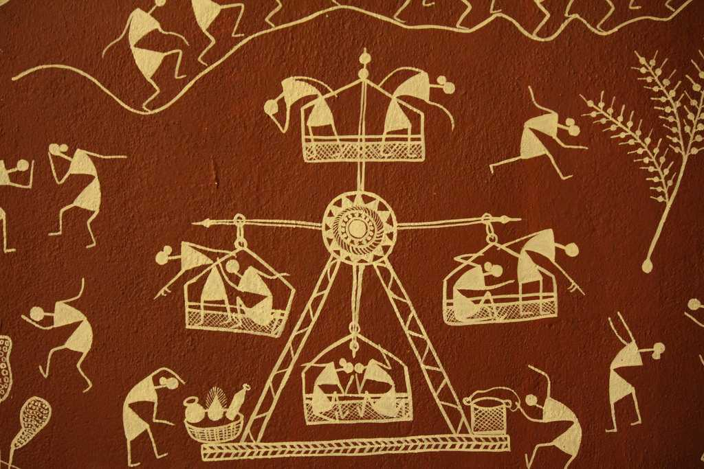
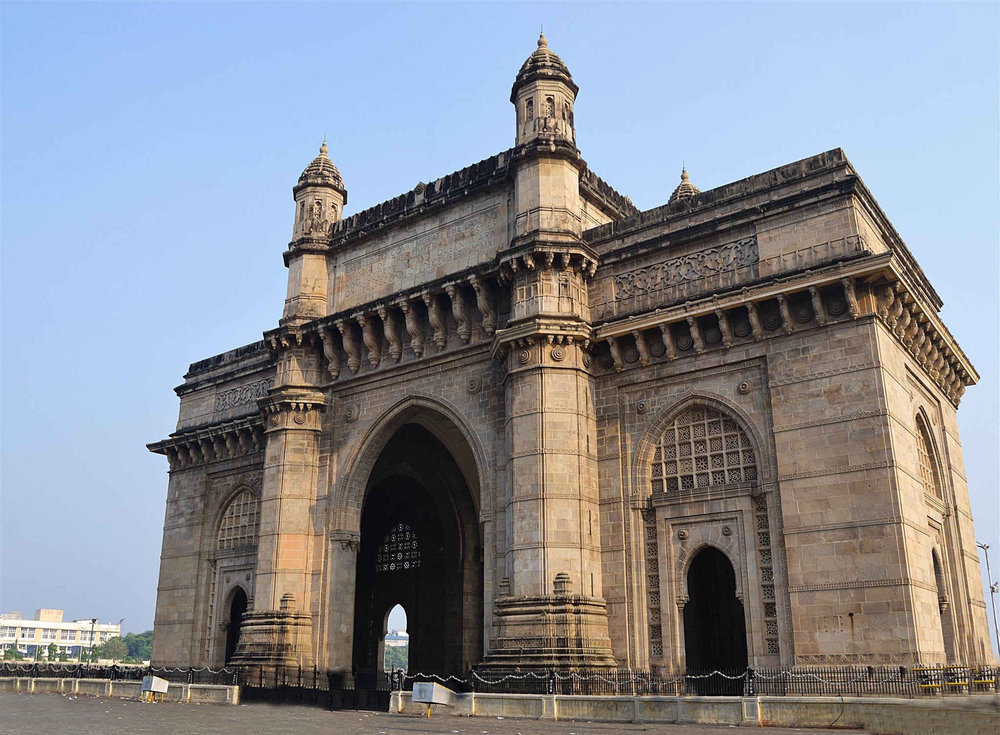

The artisans of Maharashtra are very precise and delicate in their work. The weaving of quality fabrics, Mashroo and Himroo, made from cotton and silk (famous in Aurangabad) are finest of its kind. The Kolhapuri Chappal from Kolhapur is known for their simple style, durability, quality of the leather and its design. Painthani Sarees that have been in production since past 2000 years are fine, exquisite silk sarees with delicate zari handwork in their border. Warli Paintings done by the warli tribes, who live in the Thane district of the state, tell a tale to the viewers. The paintings are of stick-figure forms and are easy to understand. Kolhapur Saaj is a special type of necklace, famous among women of Maharashtra.
Gateway of India The Gateway of India is one of India's most unique landmarks situated in the city of Mumbai. The colossal structure was constructed in 1924. Located at the tip of Apollo Bunder, the gateway overlooks the Mumbai harbor, bordered by the Arabian Sea in the Colaba district. The Gateway of India is a monument that marks India's chief ports and is a major tourist attraction for visitors who arrive in India for the first time. At one point of time, this monument represented the grandeur of the British Raj in India. The total construction cost of this monument was approximately 21 lakhs and the whole expense was borne by the Indian government. A favourite spot for tourists, nowadays, this monument attracts vendors, food stalls and photographers. The passing of the 'First Battalion of the Somerset Light Infantry' was recorded as the first main event that took place at the Gateway of India. This ceremony was conducted on February 28, 1948, when the last set of British troops and divisions left India, post-independence
 Back